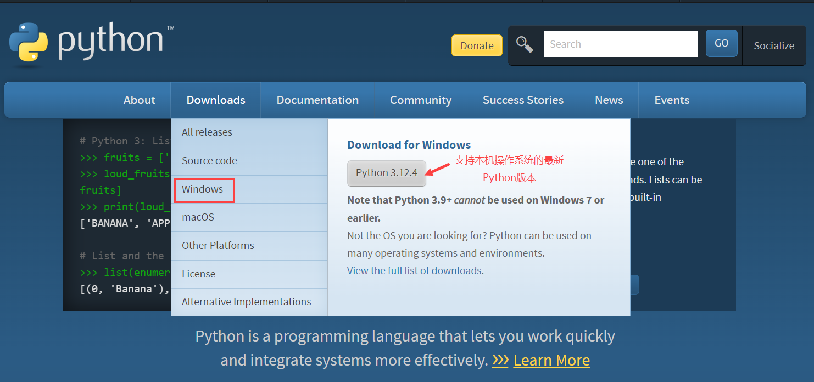
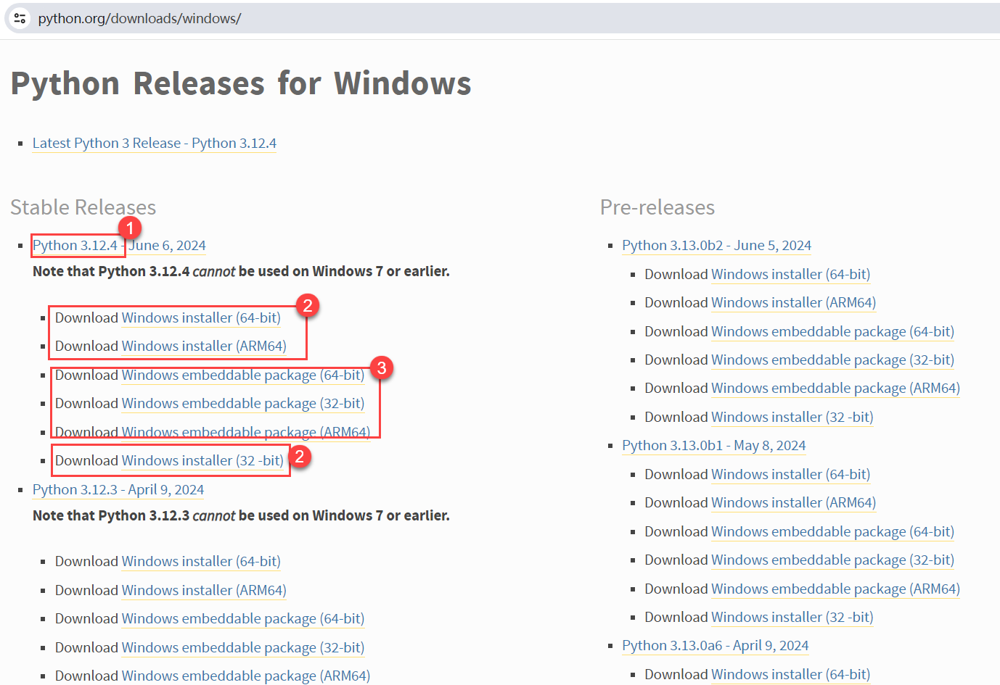
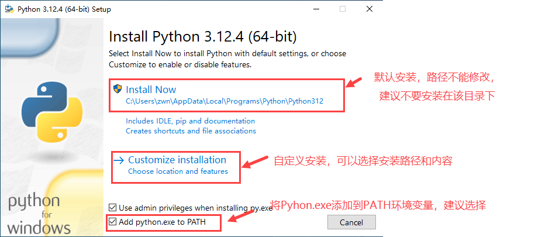
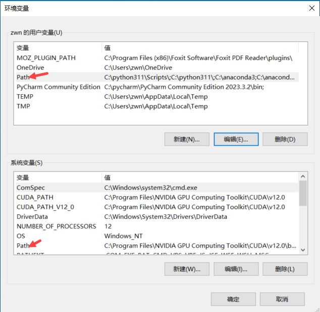
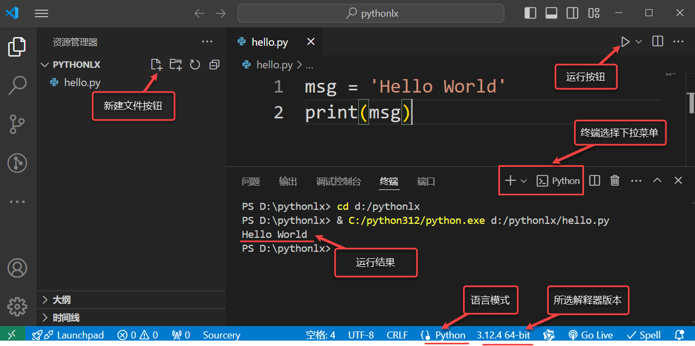

1.Python工作环境搭建
1.1 搭建Python环境方案
Python开发需"编辑工具"和"翻译工具（解释器）"，常用环境方案如下：
方案1：Python IDLE
Python自带的简单IDE，安装解释器后自动安装，功能有限，适合初学者。
方案2：IDE + 解释器
VS
Code、PyCharm等IDE（需单独配置解释器），功能强大（代码补全、调试、版本控制）。
方案3：Anaconda
集成Python解释器、Jupyter
Notebook、Spyder等，开箱即用，但安装包体积大。
1.2 安装Python解释器
Python解释器可在Python官网下载，以下以Windows 10系统为例说明安装步骤：
1. 下载Python安装文件
-
打开Python官网（https://www.python.org/），首页自动推荐适配系统的最新版本。如需其他版本，点击"Downloads"
→
选择操作系统（如Windows），进入历史版本页面选择所需版本。如图1-1所示。

图1-1 Downloads选项
-
选择安装包类型：如图1-2所示。
-
Windows installer：图形化安装，适合大多数用户。
-
Windows embeddable package：便携版，无需安装，解压即可使用。

图1-2 windows安装包选择
2. 安装Python解释器
-
双击下载的安装包（如"python-3.12.4-amd64.exe"）,显示安装向导对话框，如图1-3所示。安装时建议勾选"Add Python.exe to PATH"（避免后续命令行无法识别python命令）。

图1-3 安装方式选择界面
-
以自定义安装为例，选择"Customize
installation"（自定义安装），默认勾选"Documentation、pip、td/tk and
IDLE"等选项，如图1-4所示。
-
点击"Next"，打开"Advanced
Options"对话框，如图1-5所示。在该对话框中修改安装路径（建议不安装在C盘默认目录），点击"Install"开始安装。
- 安装完成后点击"Close"关闭界面，如图1-6所示。
3. 检验安装是否成功
打开"命令提示符"（Win+R → 输入cmd），执行以下命令：
# 检查Python版本
python --version
# 或
python -V
# 检查pip是否安装成功
pip --version
若显示版本信息，说明安装成功；若提示"不是内部或外部命令"，需配置环境变量PATH。
4. 配置环境变量
若命令行无法识别python/pip，需手动配置PATH：
-
找到Python安装目录（如"C:\python312"）和pip目录（"C:\python312\Scripts"）。
- 右键"此电脑" → "属性" → "高级系统设置" → "环境变量"。

图1-7 环境变量对话框
-
在"系统变量"中找到"Path" → 点击"编辑" →
"新建"，分别粘贴上述两个目录路径。
- 点击"确定"保存，重启命令提示符生效。
5. Python IDLE的使用
Python IDLE是自带的轻量级IDE，提供两种工作模式：
交互模式
打开IDLE后直接进入，输入代码后按回车立即执行，适合单句测试。
>>> "hello"
'hello'
>>> 3+2
5
退出：输入exit()或按Ctrl+Z。
文件模式
适合编写多语句程序，步骤：
- 点击"File" → "New File"新建.py文件。
- 输入代码，按Ctrl+S保存。
print("hello")
print("Nice to meet you!")
- 点击"Run" → "Run Module"运行，查看结果。
运行结果
hello
Nice to meet you!
在Python
IDLE中除了利用菜单，还可以利用快捷键进行程序编写、编辑和运行。常用快捷键如表
1-1所示。
表1-1 Python IDLE常用快捷键
| 快捷键 |
功能 |
快捷键 |
功能 |
| Alt+P |
浏览历史命令（上一条） |
Ctrl+S |
保存文件 |
| Alt+N |
浏览历史命令（下一条） |
Ctrl+] |
缩进代码块 |
| Alt+/ |
自动补全单词 |
Ctrl+[ |
取消代码块缩进 |
| Alt+3 |
注释代码块 |
Ctrl+Z |
撤销操作 |
1.3 搭建VS Code开发环境
VS
Code是微软开发的免费开源代码编辑器，支持多语言，可通过插件扩展功能，适合Python开发。
1. VS Code安装
-
打开VS
Code官网（https://code.visualstudio.com/），下载适配系统的安装包。
- 双击安装包，按向导操作，建议修改安装路径（避免C盘）。
2. VS Code插件安装
需安装以下插件：
-
中文汉化包：
-
打开"扩展"（Ctrl+Shift+X），搜索"Chinese (Simplified) Language
Pack"，安装后重启VS Code。如图1-9所示。
-
若未自动切换中文，按Ctrl+Shift+P → 输入"Configure Display
Language" → 选择"中文（简体）"。
-
Python插件：
-
搜索"Python"（微软官方插件），安装后支持代码补全、调试、语法检查等功能。
3. 配置Python解释器
- 按Ctrl+Shift+P → 输入"Python: Select Interpreter"。
-
在列表中选择已安装的Python解释器（如"C:\python312\python.exe"），或手动输入路径。
4. 利用VS Code编辑运行Python程序
VS Code以"文件夹"为项目单位，步骤如下：
-
创建项目文件夹（如"PythonProject"），在VS Code中"文件" →
"打开文件夹"打开该文件夹。
-
点击"新建文件"，命名为"hello.py"（需带.py扩展名，VS
Code才识别为Python文件）。如图1-11所示。

图1-11 VS Code窗口介绍
-
输入代码：
msg = "Hello World"
print(msg)
-
运行程序：
- 点击右上角"运行"按钮。
- 右键 → "在终端中运行Python文件"。
-
选择代码 → 右键 → "在Python终端中运行选择/行"（测试代码片段）。
使用VS Code 编辑程序时可以使用快捷键进行操作，常用快捷键如表 1-2所示。
表1-2 VS Code常用快捷键
| 快捷键 |
功能 |
| Ctrl+”+” |
放大编辑窗口 |
| Ctrl+”-” |
缩小编辑窗口 |
| Alt+Z |
自动换行 |
| Alt+Shift+F |
代码格式化 |
| Ctrl+/ |
切换注释 |
1.4 搭建PyCharm开发环境
PyCharm是JetBrains开发的专业IDE，提供社区版（免费，适合初学者）和专业版（收费，功能更强大）。
1. PyCharm安装
-
打开PyCharm官网（https://www.jetbrains.com/pycharm/），下载Windows平台的社区版（Community
Edition）。
- 双击安装包，点击"下一步"，设置安装路径（建议不安装在C盘）。
-
选择安装选项（建议勾选"创建桌面快捷方式"和"将.py文件与PyCharm关联"）。
- 点击"下一步" → "安装"，完成后重启电脑生效。
2. PyCharm配置
（1）PyCharm汉化
- 打开PyCharm → "File" → "Settings" → "Plugins"。
- 搜索"Chinese"，安装"Chinese (Simplified) Language Pack"。
- 重启PyCharm即可显示中文界面。
（2）配置Python解释器
- 打开PyCharm → "文件" → "设置" → "项目：XXX" → "Python解释器"。
-
点击"添加解释器"，选择解释器类型：
-
Virtualenv环境：创建独立虚拟环境，避免依赖冲突（推荐）。
- 系统解释器：使用已安装的Python解释器。
- 选择解释器路径（如"C:\python312\python.exe"），点击"确定"。
（3）编辑运行Python文件
- "文件" → "新建" → "Python文件"，命名为"hello.py"。
-
输入代码后，点击代码编辑区右上角"运行"按钮，或右键 → "运行'hello'"。
- 运行结果将在下方"运行"面板显示。
1.5 搭建Anaconda集成开发环境
Anaconda是Python和R语言的发行版，集成了Python解释器、常用科学计算库（如Numpy、Pandas）和开发工具（Jupyter
Notebook、Spyder），适合数据分析和科学计算。
1. Anaconda安装
-
下载Anaconda：
- 官网（https://www.anaconda.com/products/individual）。
-
国内镜像（如清华大学镜像：https://mirrors.tuna.tsinghua.edu.cn/anaconda/archive/），下载速度更快。
-
双击安装包，点击"Next" → "I Agree"，选择安装类型（"Just
Me"适合个人使用）。
-
选择安装路径，点击"Next"，勾选"Add Anaconda3 to my PATH environment
variable"（可选，方便命令行调用）。
- 点击"Install"，完成后点击"Finish"。
2. 使用Jupyter新建交互脚本
Jupyter Notebook是开源Web应用，支持交互式编程，步骤如下：
-
启动Jupyter Notebook：
- Windows：点击"开始" → "Anaconda3" → "Jupyter Notebook"。
-
命令行：输入
jupyter notebook。
-
在浏览器中打开Jupyter界面，点击右上角"New" → "Notebook" →
选择Python内核。
-
编写代码：在单元格中输入代码，按"Shift+Enter"运行，结果将显示在下方。
-
保存Notebook："File" → "Save and Checkpoint"，默认保存为.ipynb文件。
1.6 AI辅助编程
AI辅助编程利用人工智能技术帮助开发者高效编写、调试代码，降低入门门槛，提高开发效率。
1. 大模型对话式编程助手
通过大模型（如DeepSeek、通义千问）输入提示词生成代码，示例：
提示词
请用Python编程计算1-100之间所有奇数和
生成代码
# 生成1到100之间的所有奇数并求和
sum_odd = sum(range(1, 101, 2))
print("1-100之间所有奇数的和为:", sum_odd)
运行结果
1-100之间所有奇数的和为: 2500
2. 集成式AI编程助手
集成在IDE中的AI工具（如GitHub
Copilot、通义灵码），支持实时代码补全、解释和重构：
GitHub Copilot
由GitHub和OpenAI联合开发，支持多种IDE，可根据注释和上下文生成代码。
优势：训练数据丰富，支持多语言，集成度高
局限：收费服务，部分场景可能生成错误代码
通义灵码
阿里巴巴开发的AI编程助手，支持Java、Python等语言，对中文提示更友好。
优势：免费额度充足，支持国产框架，中文优化
安装：VS Code扩展商店搜索"通义灵码"
本章小结
本章介绍了程序设计语言的发展历程，重点讲解了Python环境的搭建方法，包括Python解释器安装、VS
Code、PyCharm和Anaconda等开发工具的配置。同时介绍了AI辅助编程工具的使用，这些工具能有效提高编程效率，降低学习门槛。选择适合自己的开发环境和工具，是进行Python编程的基础，也是后续学习的重要前提。
思考与练习
-
比较编译型语言和解释型语言的异同，列举3种编译型语言和3种解释型语言。
- 安装Python解释器，并通过命令行验证安装是否成功。
-
选择一种开发工具（VS
Code、PyCharm或Anaconda）进行配置，编写并运行第一个Python程序（输出"Hello
World!"）。
-
使用AI编程助手生成一个计算1-100之间所有偶数和的程序，并运行验证结果。
-
尝试使用Jupyter
Notebook编写一个简单的Python脚本，体验交互式编程的特点。